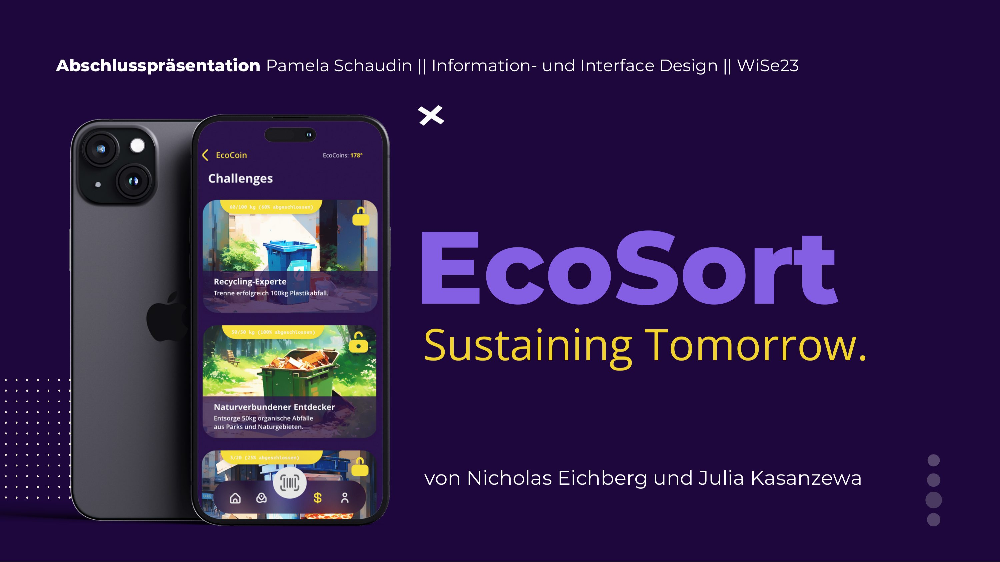
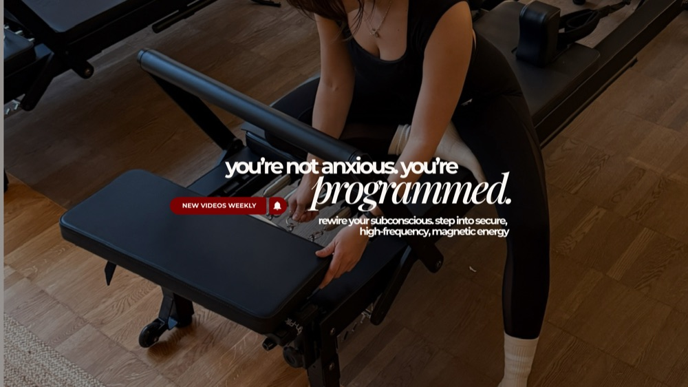
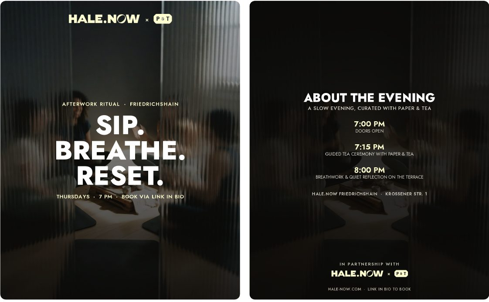
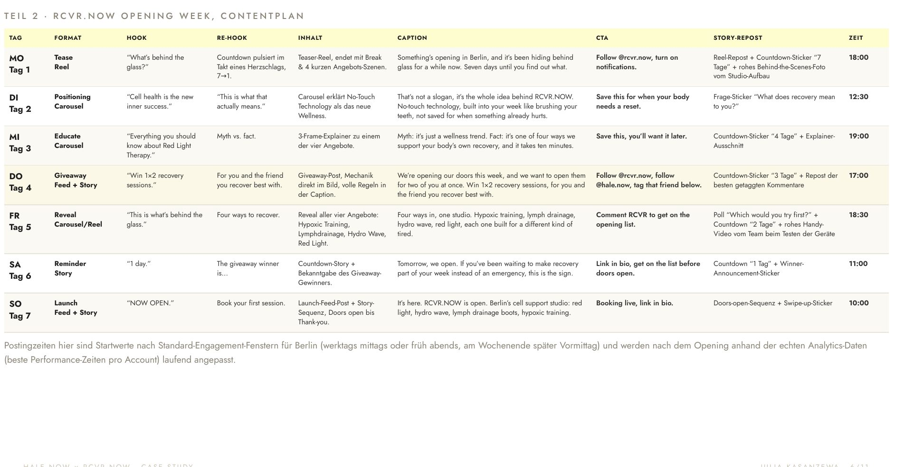
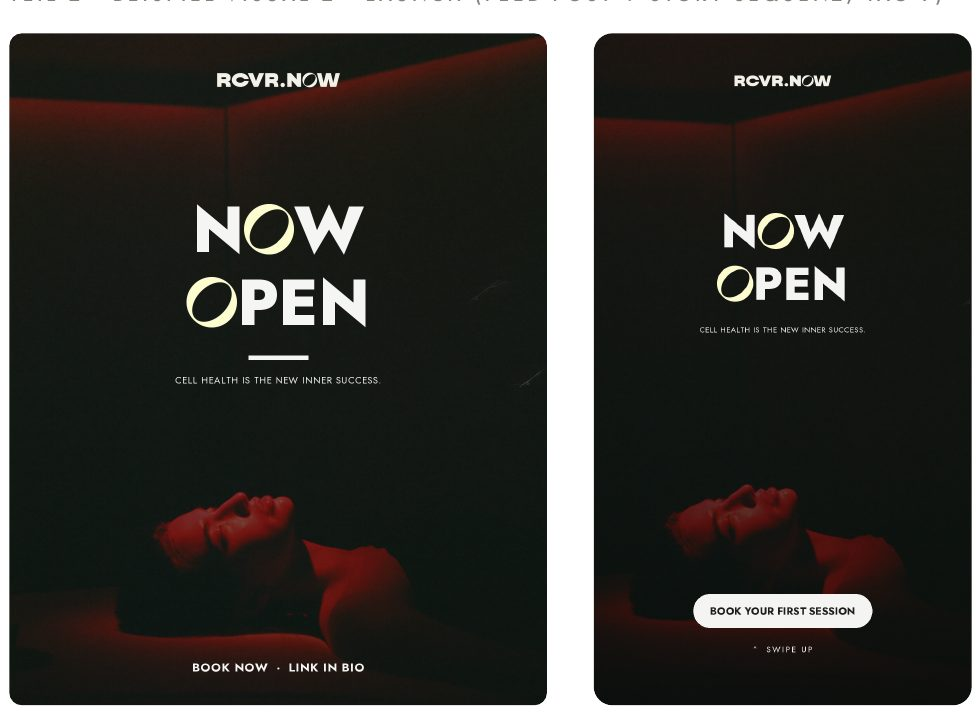

currently working as ios developer|
i write pull requests that ship, and hooks that stop the scroll.
I'm a software engineer and founder with 5+ years of experience in backend and iOS development, specialising in scalable system architecture, API design, and full-stack product delivery. A B.Sc. in Computer Science and an M.Eng. in Print & Media Technology (both BHT Berlin) gave me a genuinely cross-disciplinary foundation: engineering rigor on one side, user-centred media and brand thinking on the other.
Alongside engineering roles, I independently founded and operate a direct-to-consumer wellness brand, building the e-commerce platform, the funnels, and a multi-platform content strategy on Instagram, YouTube and TikTok from a single follower to a running business. I know what it's like to ship code in the morning and content that has to perform by the afternoon. Use the switch above to jump to the track you're hiring for, or keep scrolling, both live on the same page.
where i've shipped code.
production backend work, native iOS features, and my own apps, from architecture through to release.
- Built and maintained scalable backend services (Node.js, Express.js, PostgreSQL, Sequelize) for a high-performance interactive streaming platform in a microservices environment
- Designed REST APIs and documented them in OpenAPI/Swagger; refactored legacy Sequelize queries for performance and long-term maintainability
- Contributed native iOS features in Swift and Objective-C; integrated internal SDKs and debugged UI components in Xcode
- Extended CI/CD pipelines (Docker, Jenkins, AWS S3); monitored live systems and resolved bottlenecks via Kibana dashboards; tested with Mocha, Chai, k6, Selenium and BrowserStack
- Built internal APIs connected to ActiveCampaign, automating marketing workflows and linking backend logic to customer journeys
- Planned and delivered a complete WordPress + Hetzner website end-to-end, from discovery call to live launch, including theme customisation, product pages, and galleries
- Implemented technical SEO (local keywords, schema markup, XML sitemap), full GDPR compliance, and Core Web Vitals performance optimisation
- Set up Google Analytics 4, Search Console and heatmaps for data-driven, continuous conversion rate optimisation
- Built conversion-focused lead forms, FAQ pages, and testimonial carousels that drove measurably higher inquiries
Native SwiftUI companion app for my own wellness brand, with Sign in with Apple auth, a Supabase backend, and an in-progress audio player for the hypnosis library.
Native iOS app that identifies artworks on-device and shows curated info in real time, built for museum visitors, no internet required. 80%+ real-world accuracy across 19 classes.
CRUD e-commerce backend powering an EJS storefront, led as both backend developer and Scrum Master for a 5-person team, sprints run on GitLab.

An AI-powered public waste-sorting concept for littered Berlin parks: NFC-triggered smart bins with camera-based sorting guidance, and an EcoCoins reward app to make recycling worth doing. Covers problem research, information architecture and UI design.
where i've grown audiences.
multi-platform content strategy, video production, and a wellness brand run solo end-to-end.
- Founded and scaled a D2C wellness brand end-to-end (brand strategy, product, tech and growth) as a solo founder
- Designed and built a WooCommerce e-commerce platform (WordPress, Stripe, PayPal, Google Pay) from the ground up
- Run a data-driven, multi-pillar content strategy (Mindset · Relationships · Performance) across Instagram, YouTube and TikTok, owning scripting, filming and post-production (Descript, Final Cut Pro, Premiere Pro, CapCut)
- Engineered ManyChat DM automation and email funnels (HubSpot, KIT) that convert organic engagement into measurable leads
- Track growth with Metricool, VidIQ and KeywordsEverywhere; iterate weekly on retention, reach and conversion KPIs
Led a 4-person team end-to-end (script, shoot, edit), delivering the client's final brand video from concept to cut.

Long-form and short-form video on mindset, relationships and performance. I write, film, edit and publish every video myself.
visit the channel →A wellbeing app concept with a voice-guided AI interface. Prototyped in Adobe XD and Illustrator, with the voice built in ElevenLabs using a clone of my own voice.



An 11-page case study for HALE.NOW (a Berlin wellness studio featured in Vogue Germany, Gala and InStyle) and its sister brand RCVR.NOW: brand and target-audience analysis, a designed Instagram carousel concept for a HALE.NOW x Paper & Tea event, and a full 7-day content calendar for RCVR.NOW's studio opening week, hook, caption, CTA and posting time mapped for every day.
Full 3-month growth strategy for a self-built Instagram brand, applying Lean Startup methodology to a real audience, in real time: competitor benchmarking, persona research, and KPI iteration.
Designed a lead magnet and implemented the full acquisition funnel on WordPress, mapping KPIs and a simple lifecycle flow.
- CrowdFarming Campaignbrand strategy
- Nachdruck 12 (University Magazine)editorial & print
- UI Design Course (Co-Instructor)adobe xd · taught 15 students
built a wellness brand from zero.
juliakas.de is a digital-first wellness brand I founded and run solo, helping women work through anxious attachment and scarcity mindsets through subconscious-focused audio programmes. I own every layer: brand strategy, e-commerce build, content production, funnel automation and analytics.
let's create together.
freelance packages for brands, plus collaborations on my own channels.
Authentic, native-feeling video content for your brand: unboxings, testimonials and tutorials, shot and edited in a style that actually performs on Instagram and TikTok.
Sponsored features and product integrations across my own channels, an audience that engages with mindset, relationships and performance content, and with recommendations.
The same HALE.NOW-style process for your brand: positioning, a content calendar, and the copy to launch it, built to hand off or to run together.
Want to collaborate on @juliakasanzewa, or bring me onto your brand? Reach out any time.
hello@juliakas.dehow i work.
- 01 write code that's boring in production and interesting in the design doc
- 02 tests aren't optional, they're how future-me trusts past-me
- 03 document the why, not just the what
- 04 ship small, ship often, ask for feedback early
- 05 the best architecture is the one the next engineer can actually understand
- 01 hook first, always, you have three seconds
- 02 consistency beats a viral fluke, every single time
- 03 every post has a job, awareness, trust or conversion, know which one
- 04 read the comments, they're free market research
- 05 a content calendar is a promise to your audience, keep it
three lenses, one me.
what I run every decision through, whichever hat I'm wearing that day.
predictable, documented, easy to hand off to the next person, including future me.
the bug is almost always in the case nobody described out loud. I go looking for it before a user finds it for me.
if it's in production, it's mine until someone else explicitly owns it. no orphaned code.
I'm not making content for everyone, I'm making it for one specific person scrolling at 11pm. that's who I write for.
vanity metrics feel good. retention, saves and shares tell the truth about what actually worked.
the algorithm changes monthly. a real, recognisable voice is the one thing it can't take away from you.